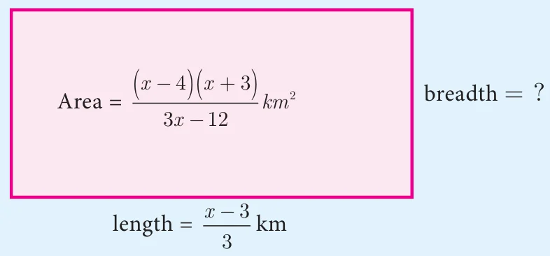
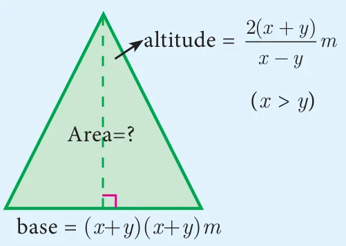

We have studied the concepts of addition, subtraction, multiplication and division of rational numbers in previous classes. Now let us generalize the above for rational expressions.
Multiplication of Rational Expressions
If \(\frac{p(x)}{q(x)}\) and \(\frac{r(x)}{s(x)}\) are two rational expressions where \(q(x) \neq 0,\ s(x) \neq 0\),
their product is \(\frac{p(x)}{q(x)} \times \frac{r(x)}{s(x)} = \frac{p(x) \times r(x)}{q(x) \times s(x)}\)
In other words, the product of two rational expression is the product of their numerators divided by the product of their denominators and the resulting expression is then reduced to its lowest form.
Division of Rational Expressions
If \(\frac{p(x)}{q(x)}\) and \(\frac{r(x)}{s(x)}\) are two rational expressions, where \(q(x),\ s(x) \neq 0\) then,
\(\frac{p(x)}{q(x)} \div \frac{r(x)}{s(x)} = \frac{p(x)}{q(x)} \times \frac{s(x)}{r(x)} = \frac{p(x) \times s(x)}{q(x) \times r(x)}\)
Thus division of one rational expression by other is equivalent to the product of first and reciprocal of the second expression. If the resulting expression is not in its lowest form then reduce to its lowest form.
Progress Check
Find the unknown expression in the following figures.

Fig. 3.5 
Fig. 3.6
Example 3.15
(i) Multiply \(\frac{x^3}{9y^2}\) by \(\frac{27y}{x^5}\) (ii) Multiply \(\frac{x^4b^2}{x - 1}\) by \(\frac{x^2 - 1}{a^4b^3}\)
Solution
- \(\frac{x^3}{9y^2} \times \frac{27y}{x^5} = \frac{3}{x^2y}\)
- \(\frac{x^4b^2}{x - 1} \times \frac{x^2 - 1}{a^4b^3} = \frac{x^4 \times b^2}{x - 1} \times \frac{(x + 1)(x - 1)}{a^4 \times b^3} = \frac{x^4(x + 1)}{a^4b}\)
Example 3.16
Find
- \(\frac{14x^4}{y} \div \frac{7x}{3y^4}\)
- \(\frac{x^2 - 16}{x + 4} \div \frac{x - 4}{x + 4}\)
- \(\frac{16x^2 - 2x - 3}{3x^2 - 2x - 1} \div \frac{8x^2 + 11x + 3}{3x^2 - 11x - 4}\)
Solution
- \(\frac{14x^4}{y} \div \frac{7x}{3y^4} = \frac{14x^4}{y} \times \frac{3y^4}{7x} = 6x^3y^3\)
- \(\frac{x^2 - 16}{x + 4} \div \frac{x - 4}{x + 4} = \frac{(x + 4)(x - 4)}{(x + 4)} \times \left(\frac{x + 4}{x - 4}\right) = x + 4\)
\(\begin{aligned} \frac{16x^2 - 2x - 3}{3x^2 - 2x - 1} \div \frac{8x^2 + 11x + 3}{3x^2 - 11x - 4} &= \frac{16x^2 - 2x - 3}{3x^2 - 2x - 1} \times \frac{3x^2 - 11x - 4}{8x^2 + 11x + 3} \\ &= \frac{(8x + 3)(2x - 1)}{(3x + 1)(x - 1)} \times \frac{(3x + 1)(x - 4)}{(8x + 3)(x + 1)} = \frac{(2x - 1)(x - 4)}{(x - 1)(x + 1)} = \frac{2x^2 - 9x + 4}{x^2 - 1} \end{aligned}\)